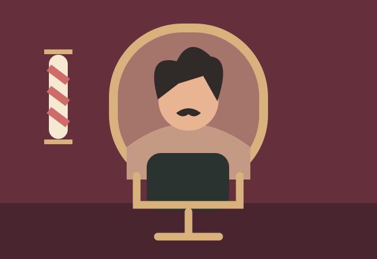

En desarrollo · Vista previa del concepto
Vida cotidiana · Barbería
Un pequeño cambio
Pide un cambio de look y descubre cómo tus decisiones transforman el resultado. Cada elección deja una huella; incluso un malentendido puede acabar en un peinado inolvidable.
Un mundo con personalidad propia
Borgoña, crema y latón. Un espacio cálido, con espejos redondeados y aire de barbería clásica.
Mientras tanto, jugar a La ruta secreta ↗
Esta página presenta la dirección visual de una futura historia. La aventura todavía no está disponible para jugar.